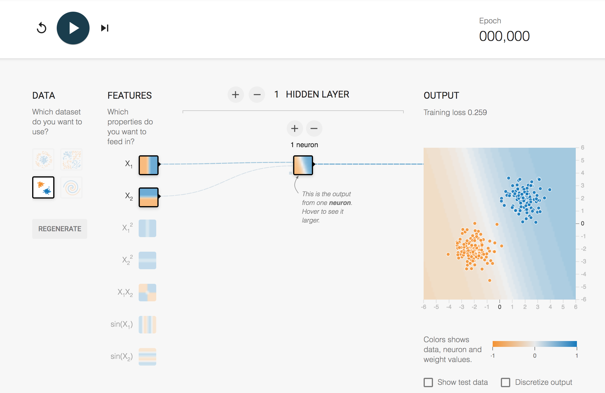

6 Inside the mind of a neural network¶
In the previous required notebook, you met a simple neural network architecture known as a multi-layer perceptron and saw how it could be trained to recognise and distinguish between various classes of object based on a two-dimensional representation of each object.
You also saw how we could inspect the weights of a network, as well as map the decision boundaries that it created in order to distinguish the different classes.
To a certain extent, training neural networks effectively is a creative act in which the network designer explores various combinations of feature design, network architecture and training regime to create a network capable of performing a desired task.
In this notebook, you will use a tool originally published as the TensorFlow Playground to explore how a neural network distinguishes between two classes of input that are arranged in a way that cannot be separated by drawing simple lines between them.
6.1 Introducing the TensorFlow Playground¶
We’ll start with a simple activity to introduce you to some of the playground controls.
The minimal interface looks like this:

On the left-hand side are several test datasets: these are datasets we can train the network on. The datasets are represented as points in a two-dimensional space over the range -1 ... +1 on each axis. For our introductory activity, we’ll use the dataset with two clear clusters of points: a cluster of orange points in the bottom left of the two-dimensional test area, and a cluster of points in the top right.
In the middle, we have the network, in this case with two input neurons, and a single hidden layer with a single neuron. The hidden layer neuron is connected to an output display that shows the training data and the discrimination that has been applied to it in a view similar to the boundary line visualisation in the previous notebook.
If you hover over a node in the network – either the input layer or one of the hidden layer – then you will see the discrimination made by that node previewed in the larger output view.
The inputs to the network are defined as features. The first feature corresponds to the x-coordinate in the training data, and is labelled \(X_1\) in the original TensorFlow Playground. The second feature corresponds to the y-coordinate, and is labelled \(X_2\) in the original TensorFlow Playground. The depiction inside the node resembles the boundary decision visualisation; in the first input node, the negative x-values are coloured one way and the positive x-values another; in the second input node, the negative y-values are coloured one way and the positive y-values another.
You can launch an interactive version of this configuration of the playground here: Tensorflow Playground - simple patter recogniser.
If the direct link does not work for you, then from the notebook home page open the New menu and select the nb_tensorflow_playground_serverproxy option.
If you click the reset button in the top left of the user interface, just to the left of the play button, then you will see that the view represented in the hidden node changes; the output view also changes as we change the random weights connecting the inputs to the hidden layer.
You can train the network by clicking the play button, which toggles to display a stop button as the network trains. As the network is trained, you will see the weights change thickness and colour, depicting the magnitude and sign (positive or negative) of the weight respectively. A dynamically updated line chart in the top right of the playground shows the ‘error’ value, a measure that decreases as the network improves its ability to correctly detect which class an input is in. To stop the network training, you need to click the stop button to toggle it back to show the play button.
This network trains quite quickly, and you will see that even the single neuron can detect which of the two classes each of our test inputs falls into.
In the playground, you will also notice a checkbox that allows you to ‘discretize’ the output. This allows us to force the output to decide explicitly which group it thinks a point falls into, rather than hedging its bets (‘probably the orange group’, ‘maybe the blue group’, ‘erm, the orange group I think, maybe..?’).
The Show test data checkbox will show you the data used to test the output of the network. This is data that the network does not see whilst it is being trained.
6.1.1 Activity – A harder example: XOR¶
In the initial example, we could separate the two clusters with a single line, implemented by a single neuron.
Change the dataset to the ‘XOR’ (exclusive or) dataset. This shows test cases in one group (that is, one colour) if the x- and y-values are both negative or both positive, and the other group (the other colour) if the x- and y-values have different signs.

Reset the single hidden node neuron and retrain the network. Can it distinguish the two groups this time?
Add a second node to the single hidden layer, reset the network, and try again. Can the network distinguish between the two groups?
Can your network distinguish the two groups using just a single layer? If so, how many neurons are required? What do you notice about the shape of the boundary line visualisation as you increase the number of hidden neurons:
(a) as the network is trained?
(b) when the network is trained as well as it can be?
Take the size of the network back to a single hidden layer with just one neuron, then add a second hidden layer again with a single hidden neuron. Train the network. Does it solve the classification task?
What is the smallest combination of nodes across the two layers that will solve the classification problem reliably? Does the second hidden layer help at all?
What is the smallest combination of nodes across three hidden layers that can solve the task? How about four layers? Or five?
When the network reaches a steady state, do you observe anything notable about the boundary lines it has learned for differing numbers and combinations of neurons across the hidden layers?
Note that as you increase the number of layers, the network may take an increasing amount of time to find a steady, final state, as indicated by the error curve reaching a steady, flat state.
6.1.2 Optional activity – Manually editing weights¶
As well as training the network to find weights that allow the network to make a decision, you can also hover over a weight and edit it manually.
Reset the network to a single hidden layer with five neurons and train it on the XOR dataset. Can you effectively disable one of the hidden neurons by setting its output weight to zero and still maintain its level of performance?
Now pick one of the other neurons. Select one of its weights and watch how the discrimination of the node it is input into changes, as well as the overall output. Can you get a feel for how the behaviour of the node you are changing the input weight(s) to will change as you alter the weight? Can you get a feel for how the overall output decision will change as a result?
Sometimes, you may find that you can just about predict how a network is coming to a decision based on the decision a node makes, or the decision it makes based on a combination of inputs from a previous layer and the decision they appear to be making. At other times, particularly as the network gets more complex, you may feel as if you have no idea at all about how it is making its decisions.
Add any notes and reflections you care to make here.
6.2 Yet more complicated patterns¶
From experimenting with the TensorFlow Playground, you may have started to realise that the network makes its decisions by essentially trying to draw some combination of straight lines across the feature space to separate the groups.
If you look at the available training datasets, then you will see two more, rather trickier examples: one that contains two interlaced groups forming a spiral shape; and the other containing a central, circular clustered group inside a circular ring doughnut shape created by the other.
If you have not spent too much time on this notebook already, or if perhaps you fancy a play over a coffee break at some other time, see if you can create a network that can separate these groups. Don’t spend too much time on it though! (It can get quite addictive when you try…)
If you find an architecture that appears to work well without too many underused neurons (particularly low sets of input and/or output weights) across multiple resets (i.e. reset initial weights and training runs), then share the details on your Cluster group forum and put those who haven’t had as much luck out of their misery!
Note that if you have a network with a large number of hidden neurons, sometimes the boundary lines the trained network generates seem to try to fit round the data ‘too well’ (that is, the boundary line shape gets very wiggly around certain points to take account of them). This is known as ‘overfitting’ and causes the network to generalise less well: that is, when presented with a pattern it has not seen before, it can’t broadly, or ‘generally’, see which group it is likely to fall into based on its training.
If you take the OU module TM358 Machine learning and artificial intelligence, which looks at machine-learning techniques in more depth, then you will learn in much more detail about neural network pathologies such as overfitting.
6.3 Summary¶
In this notebook, you used the TensorFlow Playground to learn how to separate out two different groups of items that were arranged in different ways in the two-dimensional feature space. Whilst the groups were easily separable to the human eye, they provided more of challenge to the network.
Increasing the number of hidden nodes, both within a single layer and sometimes across multiple layers, allows the nodes to combine their individual decisions into a single weighted decision about what output group a particular pattern is in. If the network is too complicated for the task at hand, then it may start to lose the ability to generalise as a result of ‘overfitting’ the model to the data the network was trained on.
The final notebook is optional and explores several techniques for visualising the structure and behaviour of convolutional networks in an interactive way.